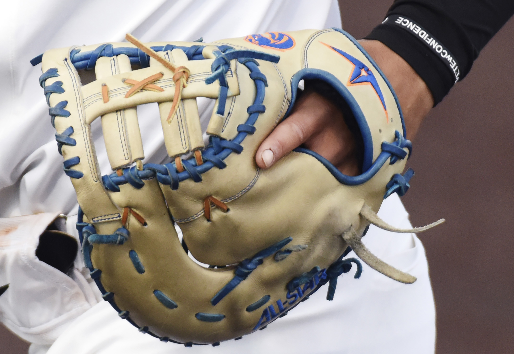

1 / 9

Zach Cook, 26, performs as Zman the Vegan for people in the area on Wednesday, Nov. 9, 2020 at Plaza 900 on the University of Missouri campus. After becoming a vegan, Cook decided to focus his music career on preaching the ways of veganism. "I don't want to be like one of those vegan activists that shames people," Cook said. "What I do is let people learn about veganism in a humorous and fun way."
2 / 9

Missouri freshman Ethan Hanson prepares to throw the hammer on Friday, April 9, 2021 at the Audrey J. Walton Track Stadium in Columbia. The furthest hammer throw that Hanson made was 52.65 meters.
3 / 9

Which is more beautiful, the whole flower or the detail in the petal?
4 / 9

University of Missouri sophomore Torin Montgomery holds his glove as he runs back into the dugout on Saturday, Feb. 27, 2021, at Taylor Stadium in Columbia. Montgomery caught the ball for the last out, allowing the two teams to switch.
5 / 9

A stair railing casts a shadow onto steps on Tuesday, Feb. 2, 2021, at the University of Missouri in Columbia. Groundhog Day is a popular tradition in America, where a groundhog will come out of its burrow and predict when winter will end depending on its shadow.
6 / 9

From left, Green City's Brody Lunsford and Higbee's Chad Crawford fight over the basketball on Friday, March 5, 2021, at Glasgow High School in Glasgow. Both teams were fighting to advance to the Missouri state semifinals for Class 1.
7 / 9

A Hickman High School student arrives on campus on Tuesday, Jan. 19, 2021, in Columbia. It was the first day high school and middle school students were back to school in person since March 2020.
8 / 9

Helias junior Beau Bondurant tackles St. Francis Borgia senior Nick Dyson to the ground at Helias Sports Complex on Friday, Sept. 18, 2020, in Columbia. Dyson recieved the kickoff ball and ran towards the endzone. While it was a close game in the first half, Helias beat St. Francis Borgia 49-28, continuing their winning strike 5-0.
9 / 9
The railroad stud burns in the forge fire on Monday, Sept. 6, at Bernard Tappel’s workshop in Jefferson City. Since metal cools off in around 40 seconds, it has to constantly be reheated in the forge to be malleable.